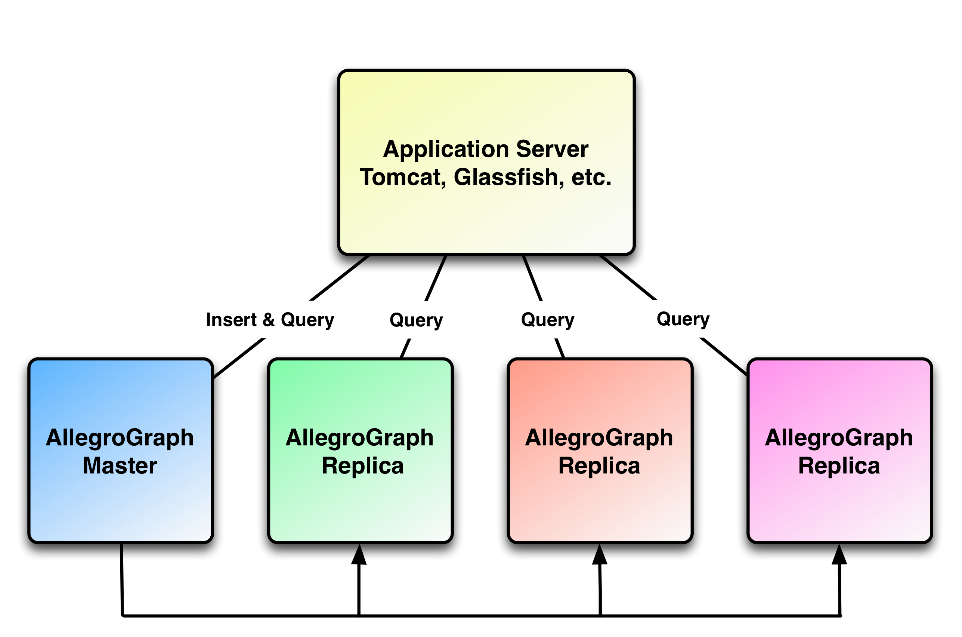

Introduction
AllegroGraph Replication is a real-time transactionally consistent data replication and data synchronization solution. It allows businesses to move and synchronize their semantic data across the enterprise. This facilitates real-time reporting, load balancing, disaster recovery, and high availability configurations.
AllegroGraph Replication is extremely reliable and best represents its capabilities in the most catastrophic situations. Current uses include keeping semantic data moving between North Sea Oil partners and managing the student success at the largest post-secondary educational institution in the US.
Why replication is useful
Organizations face more challenging technology landscapes than they did in the past. With the need to add semantic stores in a Big Data environment, they cannot afford to put this new and valuable data at risk.
Additionally, the need to use and distribute semantically sourced data throughout the organization is growing exponentially, even though budgets have been held flat or even declined in recent years.
Data thus must be protected and recoverable in case of system failures. Unexpected downtime must be minimized or eliminated.
AllegroGraph Replication is an enterprise class product that offers real-time replication and access to the semantic data, regardless of the quantity or location of the data. Replication can protect against data loss and can be a cost effective way to meet the challenges of maintaining data and access.
Common uses for replication
Replication of semantic databases in a new Big Data world addresses the need to manage the requirements of high availability, disaster recovery, real-time reporting, distributed query load, and transactional data synchronization. AllegroGraph Replication is more than up to these tasks and provides the performance to handle the use cases of the modern enterprise.

High availability/disaster recovery
Every enterprise has the mission critical need to provide data as continuously as possible. Yet disaster can threaten or stop ongoing and continuous operations. It is imperative, when the unforeseen does happen, that data is promptly recovered and put back into production use.
AllegroGraph Replication addresses high availability of semantic data in three areas:
- Managing planned downtime
- Protecting semantic data during unplanned downtime
- Providing disaster recovery
Without a proper system in place, database failure can cause:
- Lost revenue
- Damaged reputation
- Relationship issues with partners and customers
- Supply chain problems
- Legal liability
- Decisions on how to store data come under question
AllegroGraph Replication ensures not only that semantic enterprise data is never lost during downtime, but also that the data is always readily available. With AllegroGraph Replication, a standby database is always available, preventing data loss.
Real time reporting
Modern organizations have a common need to provide tools for creating, modifying and viewing Big Data, and to make these tools work with a large customer base. This requires real-time dashboards and reporting. All too frequently, this need has only been provided at the expense of application performance. The arrival of Big Data and its challenges have just made the problem more prone to negative side effect and additional costs. The exception for semantic data is when AllegroGraph Replication is used.
As part of an overall reporting solution for your enterprise Big Data semantic replication solution, AllegroGraph Replication:
- Minimizes the impact of reporting on the primary database by generating a transactionally consistent version for reporting.
- Enables query load balancing across a set of AllegroGraph database servers.
- Reduces information latency for queries and reporting.
- Optimizes batch reporting for the available window.
Data distribution and migration
As IT and Web infrastructures struggle to grow and manage Big Data complexities, there is a greater need for semantic data to be synchronized, integrated, consolidated and migrated to where it is needed. AllegroGraph Replication enables distribution of information within and across such environments by replicating data to and from different dedicated system and semantic data sources while maintaining full transactional integrity.
AllegroGraph Replication:
- Delivers data quickly and efficiently across the organization or web.
- Allows synchronization of data across multiple geographies.
How replication works
In the next two subsections, we present a schematic view of how AllegroGraph handles changes to the database (committed additions and deletions of triples). In this section, we define the basic terms.
Note that the exact implementation details cannot be inferred from this description. Things simply work as if they were implemented as we describe.
Terms
Permanent index files: AllegroGraph can store data in index files. These files survive unexpected or unplanned AllegroGraph server termination (such as server machine crashes). These files contain committed data only. If a repository is small, the system may choose not to create index files on disk but rather just keep them in memory (and rebuild them when needed). In that case, the transaction log files (described below) store the data on disk.
In-memory data in the server: Copies of some committed data, perhaps also in the transaction log files (described next) and/or in the permanent index files, also are in memory accessible by the server. This data does not survive unexpected or unplanned AllegroGraph server termination (but does survive in the transaction log files or the permanent index files). Queries operate on a combination of data in memory and in permanent files.
Transaction log files: These are files where all committed database changes (triple additions and deletions) are recorded, along with some other information. As we say below, as soon as a change is made and committed by a user, the change is recorded in a transaction log file. These files do survive unexpected or unplanned AllegroGraph server termination.
Checkpoint: The purpose of a checkpoint is to provide a known good starting point for restart recovery. When a checkpoint occurs, the system updates and cleans up repository information so that the respository is in a known state. When recovering from server terminations, the system starts at the most recent complete checkpoint and works through to the current (uncheckpointed) state. We do not give the exact list of things done during a checkpoint because these may change from release to release, but it includes things like writing internal database information (e.g., triple count, generation number, the list of indices, duplicate suppression mode, configuration, sequences, text index state, etc) to the transaction log, writing the string table state to the transaction log, flushing non-transient files to stable storage, releasing space occupied by inactive objects, and updating the checkpoint indicator file (a file indicating the position of the checkpoint records in the transaction log stream).
Backup: A backup is a copy of the permanent data files. A checkpoint is done before a backup occurs so a backup includes all (previously) in-memory data present at the time the backup was initiated.
Primary: The main AllegroGraph server. This server accepts changes to the database (committed triple additions and deletions).
Replica: An AllegroGraph server separate from the primary (and often running on a different machine than the primary) which contains a copy of the data of the primary. The issue with replicas is ensuring that all committed changes to the primay database are captured by the replicas. Of necessity, replicas are often behind the primary but there must be a machanism for them to catch up. No permanent changes can be made to replicas directly (that is, no commits). All committed changes come from the primary.
In the next section, we describe how a single AllegroGraph server (no replicas) maintains its data. In the section after that, we describe how replicas capture changes made to the primary.
A single AllegroGraph server with no replicas
Suppose you have an AllegroGraph server AG-1 with a repository RP-1. Suppose all the data of that repository is in the permanent index files. What happens when a user make changes by adding or deleting triples and committing the changes?
Let us look at a single change, C-1 (say, adding a single triple and committing the change). The user calls for C-1 to occur (perhaps by clicking on Add a statement in AGWebView and entering the triple). The following events happen:
Information sufficient to redo C-1 is written to the current transaction log file and that file is saved. At this point, the data is in the database and will survive unexpected server termination.
The same information is written as in-memory data in the server. Now C-1 is complete and the user may see an indication that the change has been made (such as a fresh prompt or a visual change in WebView).
At some future time, a checkpoint occurs. We give a partial list above saying what happens during a checkpoint.
We describe 1, 2, and 3 as happening without an intervening unexpected server termination. Let us look at the effect of such a termination on these steps:
If the termination happens after the user has issued the command to change data but before step 1: the data is lost. There is no way that data can be recovered if it is not recorded somewhere.
If the termination happens after step 1 and before step 2: when the server restarts, there is no in-memory data (it all disappeared when the server terminated) and anyway the change never made it to in-memory data. Committed changes that need to be remade are remade. Things are now back to where they were after step 2.
If the termination happens after step 2 but before step 3: this is in fact the same situation as the termination happening after step 1: the in-memory data was there but then was lost in the termination. The system checks the transaction log files and remakes any necessary changes.
If the termination happens after step 3: there is nothing to do. The checkpoint record shows change C-1 was done and checkpointed.
From the point of view of the user of a single server with no replicas, these implementation details are perhaps interesting but not important. All such a user needs to know is that data accepted by the system (step 1 completes) will be available even if the server unexpectedly terminates and is restarted. But to the user who has a server with replicas, understanding these steps is important because the replicas mimic these steps, but with some important differences.
A transaction log file (and there can be many, with new ones being created according to an internal algorithm) becomes stale when all the commits it records have been checkpointed. When a transaction log file is stale, the system will move it to an archive directory (if there is one specified) or delete it. In any case, once moved or deleted, it is not longer available to the system.
We describe elsewhere (in Transaction Log Archiving) how to cause stale transaction log files to be achived rather than deleted. You might want them archived because, combined with a database backup, you can run the database forward to a particular point in time using the backup and subsequent transaction log files (this is called point-in-time recovery and is described in detail in the Point-in-Time Recovery document). Not all users will want to do that, of course. Transaction log files take up as at least as much space as the associated data and so they can impose a significant space cost if saved but not really needed.
A server with replicas
Now let us consider the case where a server has replicas. As said in the introduction above, replicas can preserve data in the face of hardware failure (if the storage device holding the permanent data files is destroyed, the permanent data files are gone too), they can provide local access to the data for faster querying (allowing for the fact that the local data may be slightly out of date). And they can provide the ability to recover quickly (perhaps with slightly out of date data) in the event of the primary server failing. So there are many reason to have replicas. In this section, we describe how they work.
Here are some facts about replicas:
A replica is always equivalent to or behind the primary. Changes made to the primary must propagate to the replicas and this takes time.
Data commits can only be done in the primary. A replica can accept changes to the database only from the primary.
All changes are communicated to replicas via transaction log files. In the server with replica case, transaction log files are required for the replicas to get data.
When a replica terminates (whether planned or unexpected) and then restarts, it gets all data not in its permanent files by accessing the tranaction log files (its own and the primary's) and loading the needed data. The system keeps track of what is needed from transaction log files both by the primary and the replicas.
With all that in mind, here are the steps for starting a replica (see the Replication section in Replication Details for exact instructions):
Register the replication job with the primary. This tells the primary to start keeping transaction log files from the point of registration on until it knows the replication job has what it needs from them.
Backup the primary. This does a checkpoint of the primary and provides a base to use to start the replica.
Start the replica using the backup and specifying the replication job. The replica is now going. It asks the primary server to send commits starting at a certain point. When a change is stored in the replica, that fact is noted so the associated transaction log file can be archived if desired (once all commits recorded in the file have been seen by the replica).
Now the replica is going. It can be stopped and restarted just like any database.
A transaction log file goes stale only when every replica has seen all the changes in the file. This means that transaction log files may stay around much longer than in the server with no replica case. Note that if a replica server stops running and is not restarted but remains registered with the primary, no current or new transaction log file will go stale because the non-running replica server will never mark changes as received.
Replication configuration
The following provides the detailed steps for deploying two different types of AllegroGraph Replication clusters. The first is a single primary/replica pair; the second, a single primary with multiple replica instances.
Useful references
The following documents will be referred to in this discussion:
- Server Installation: this is the Allegrograph installation documentation
- Server Configuration and Control: this document lists all configuration options and describes how to add a catalog to the configuration file
- Transaction Log Archiving: this document describes important configuration options relating to transaction logging
Single primary/replica pair
- Install and Setup agraph.cfg for Primary
- Register a replication job on Primary
- Create and Backup repository on Primary
- Install and Setup agraph.cfg for Replica
- Transfer and Restore Primary Backup to Replica
- Start Replication job on Replica.
Single primary with multiple replica instances
Set up a replication job for each desired replica (step 2 above), create a backup on Primary (step 3), and then step 4 thorugh 6 for each replica.
See Replication Details for detailed instructions.
Making a replica into a primary
Suppose your primary fails. And by failure here, we mean totally fails, such as might happen when a meteor falls to earth and destroys the machine running the primary and all its associated disks. But the replica is still running, luckily on a machine in a different location unaffected by the meteor.
Here are the steps to turn the replica into the primary:
- Turn off replication. The replica is likely in a state where it is waiting for the Primary to return. Run the following command to temporarily stop replication.
agtool replicate --secondary-host <host> --secondary-port <port> --catalog <catalog> --name <replica-repository-name> --user <user> --password <password> --stop - While the above command stops replication, it does not allow the Replica to accept commits. The second step is to turn off no-commit mode. The command below uses a commonly available http client called curl to make the appropriate request to the Replica.
- You should now be able to add statements to the replica. The final step is to find and remove the following file:
curl -X DELETE -u <user>:<passwd> 'http://<replica-host>:<port>/catalogs/<catalog>/repositories/<name>/noCommit' rm <Catalog main>/<name>/restart-ws-client <Catalog main> is the path specified as Main directory of the catalog your repository is located. <name> is the name of the repository itself. If this file is not removed, the next time the Replica is restarted, it will attempt to resume replication with the Primary.
Note that even if the Primary is restored, if the Replica has added any new statements, resuming replication would likely be fatal or could corrupt the data in the repository.
Further replication details
See Replication Details for further information on replication functionality.